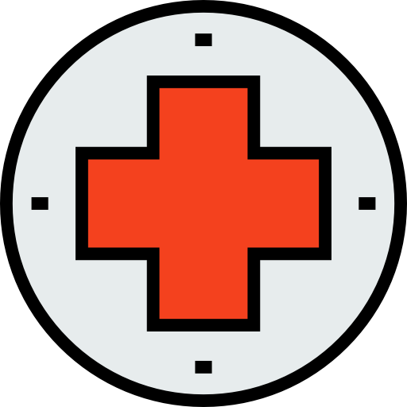

Smog - definicja i informacje o zjawisku
Słowo “smog” to mieszanka angielskich słów: “smoke”, czyli “dym” oraz “fog”, czyli “mgła”. Ta
zbitka wyrazowa rozpowszechniła się na świecie, idealnie określając zjawisko. Można powiedzieć, że
smog jest właśnie taką sztuczną mgłą, która utworzyła się w sposób nienaturalny, jako efekt działań
człowieka oraz pewnych niesprzyjających okoliczności przyrody.
W głównej mierze spowodowany emisją spalin i pyłów do atmosfery przez samochody oraz
zakłady
przemysłowe
Smog powstaje na skutek wymieszania powietrza z zanieczyszczeniami i spalinami, powstającymi w efekcie
działalności człowieka. Odpowiadają za to fabryki, coraz większa liczba samochodów, palenie węglem,
drewnem i innymi paliwami stałymi w piecach. Za jego pojawienie się odpowiada również pogoda, klimat czy
ogólne uwarunkowania terenu. O wiele trudniej będzie pozbyć się zanieczyszczeń, gdy jakieś miasto leży w
kotlinie, a bezwietrzna pogoda uniemożliwia ich rozprzestrzenienie się i rozrzedzenie, sprawiając że
zawisają nad miejscowością.

Znacząco obniża poziom zdrowia mieszkańców obszarów na których występuje
Skutki zanieczyszczenia powietrza są bardzo łatwo zauważalne – wszyscy widzimy gęsty dym, zalegający
nad miastem i każdemu z nas gorzej się takim zanieczyszczonym powietrzem oddycha. Skutki smogu są jednak
o wiele bardziej dalekosiężne, niż się niektórym wydaje – ma on bowiem bardzo duży wpływ na nasze
zdrowie,
prowadząc (przy dłuższej ekspozycji) między innymi do:
- pojawienia się alergii oraz astmy
- wywołania niewydolności oddechowej
- obniżenia odporności całego organizmu
- wywołania chorób układu krwionośnego i serca
- pojawienia się chorób nowotworowych.